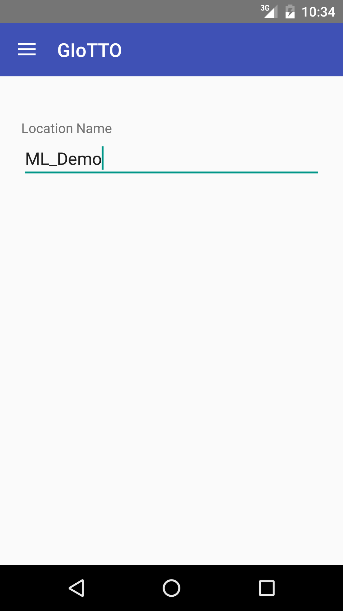
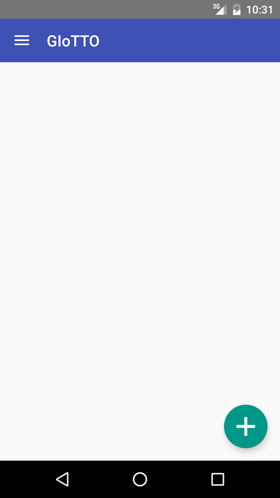
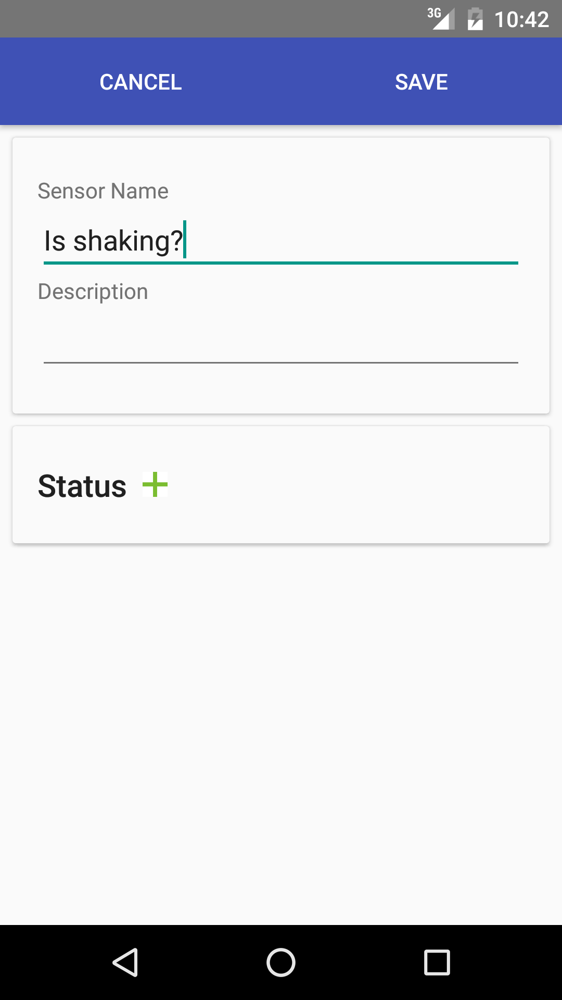
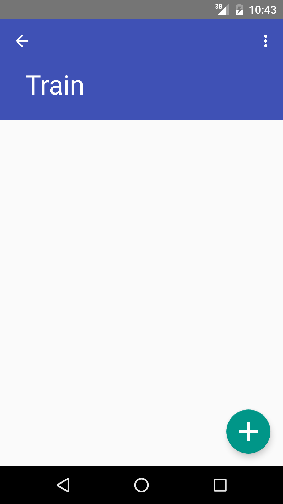
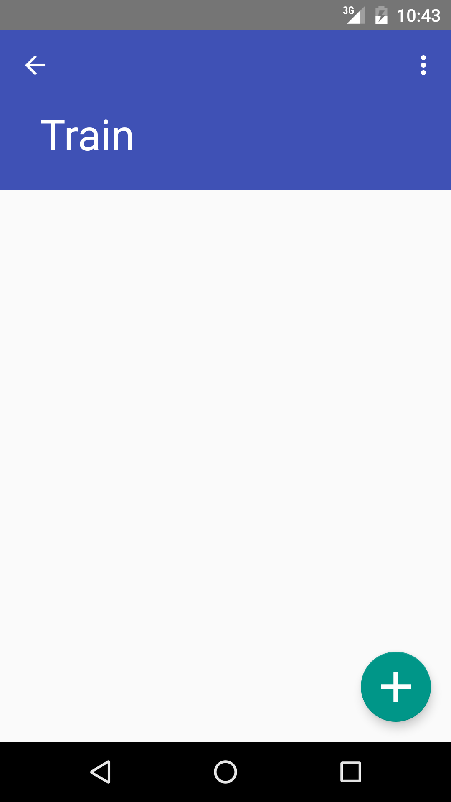

Usage¶
Set Location¶
{kind=link}
In our vision, a ML front end should identify its location with localization technologies such as BLE beacons or GPS. However, because they are not deployed yet, we need to configure location manually.
Tap the hamburger icon at the top left corner and choose Location. Then, put a location name. The location name should match location meta tag attached to sensors in Building Depot. If you are using the demo database in Building Depot, you can configure ML_demo_room1 for test.
Create a Virtual Sensor¶
 {kind=link}
{kind=link}
Go back to the main screen by tapping Sensors in the navigation drawer. Tap + button to create a virtual sensor. Type a name and a description and tap Save. You can add Status later. So, let’s skip it for now.
Add Training Samples¶
 

{kind=link}
Tap the virtual sensor that you just created from the sensor list. Tap the teacher button to open Train screen. Add Statuses (i.e., labels) by tapping + button. For each status, record sensors readings. Tap recording button when your target is in the state. For instance, if you want to create door oepn/close sensor. You statuses would be open and close. First, open the door and tap recording button for the open status, wait for a while, and tap Finish. Then, close the door, and repeat the same process for the close status
You need to add at least five recordings to each status.
Train and Predict¶
After adding training sample, tap Train menu in the top right corner to train a virtual sensor. Tap Test to obtain a prediction for the current status.